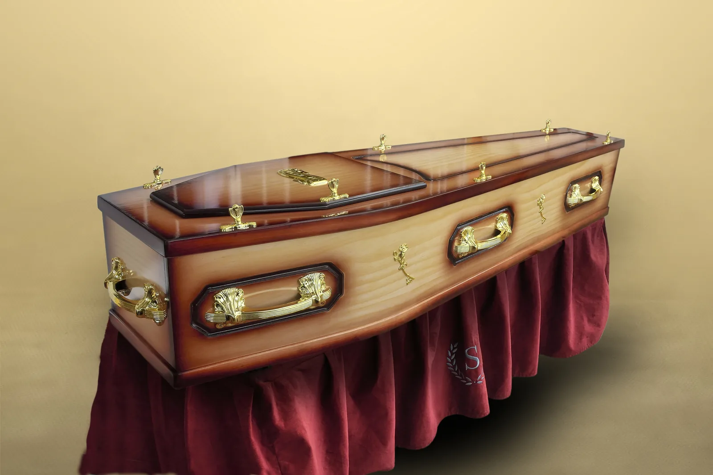
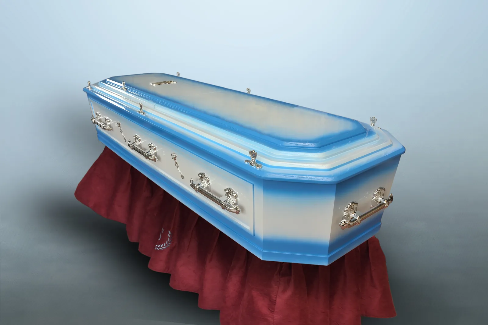
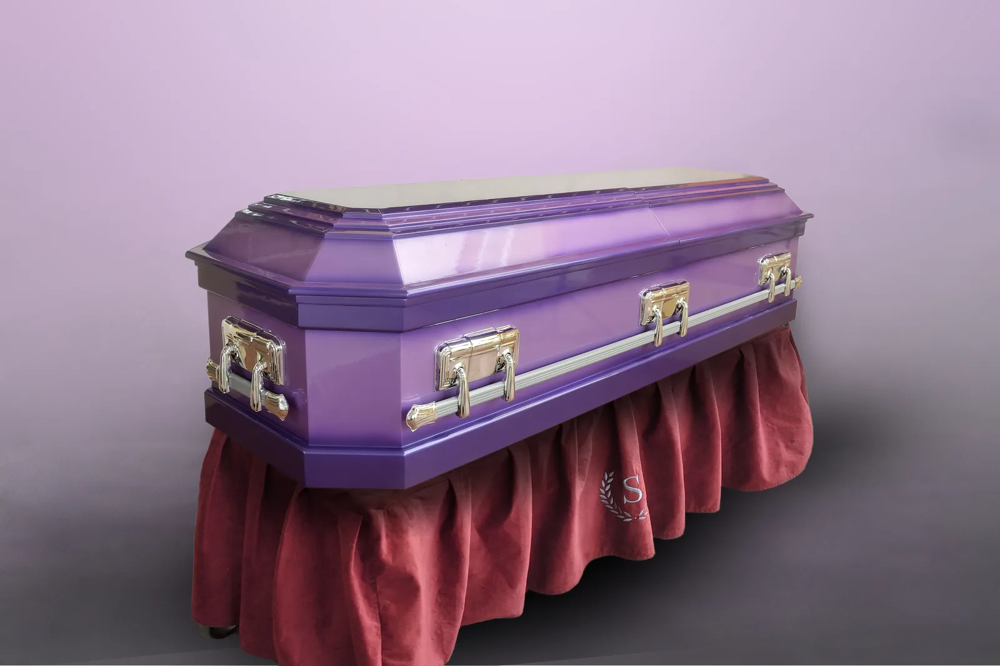
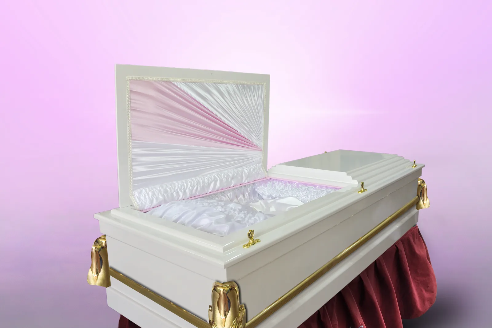

Sterling collection
Deep Wine Finish
Polished deep-wine finish · Gold-tone hardware
Casket Collection
Browse representative styles, then speak with Sterling for guidance on current designs, finishes and availability.
Polished deep-wine finish · Gold-tone hardware

Sterling collectionWarm natural grain · Gold-tone hardware
Rich burgundy finish · Decorative gold-tone hardware

Sterling collectionBlue and ivory finish · Silver-tone hardware
Green and ivory finish · Silver-tone hardware

Sterling collectionPurple finish · Silver-tone hardware
Deep wood finish · Traditional detailing

Sterling collectionWhite finish · Gold-tone hardware
Whenever you need us
When you are ready to talk, a caring member of our team is only a call or message away.